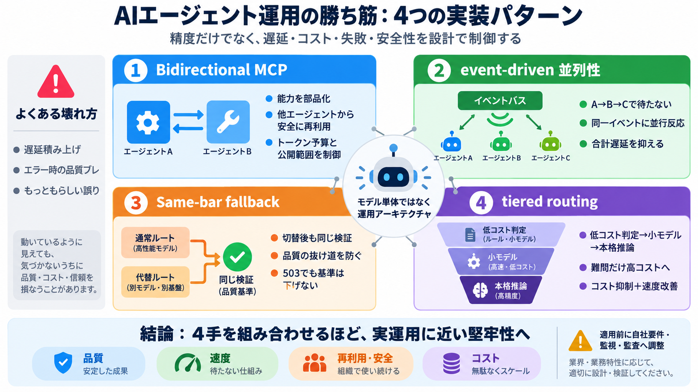

よくある失敗
遅延積み上げ、503などのエラー、品質ブレが表面化
遅延（latency）と失敗（failure）が評価と体験を支配する
LLMの精度だけでなく、遅延・コスト・失敗・安全性に効く設計が、成果につながる——Googleの要点を読みやすく再構成します。
AIエージェントは「生成」だけで完結しません。ツール呼び出し、並列、フォールバック、ルーティングまで含めて“仕事を完遂”する設計が必要です。
遅延積み上げ、503などのエラー、品質ブレが表面化
もっともらしい誤り（例：医療ガイドラインの誤誘導）
上位提出物に多かった共通点は次の4パターンです：Bidirectional MCP、イベント駆動の並列性、Same-bar fallback、ティアード・ルーティング。
MCPを“ツールサーバー”にも“クライアント”にも使う
コールチェーンで待たず、同一イベントに複数が並行反応
フォールバック先も“同一の検証ロジック”を通す
高コスト推論に行く前に安価な判定で仕分け
双方向MCPにすると、エージェントが内部でやっている推論やデータ参照を“外部のツール”として提供できます。
他エージェントからは、その処理を再利用しにくい
自分の能力をMCPサーバー化し、他から呼び出し可能
コールチェーン型（A→B→C）は、先行が終わるまで後続が止まります。イベントバス型は同一シグナルに複数エージェントが独立に反応できます。
上流がイベントを出す
関連するエージェントが受信
待ちがボトルネックになりにくい
フォールバック自体は一般的です。重要なのは“切替”ではなく、片側だけ検証が抜ける事故を防ぐために両経路で同一の検証関数を通すことです。
片方の経路だけ validate が弱い → 品質低下が隠れる
validate_clinical_response 等の検証を必ず同じロジックで実行
難問だけでなく、比較的簡単な問い合わせまで重い推論を通すとコストが膨らみます。そこで段階的にふるい分けし、必要なときだけ高コストモデルへ到達させます。
正規表現などのゼロトークン判定
安価な分類で一次仕分け
必要時に高コストモデルへ
4パターンは互いに補完的で、同一ビルドで組み合わせるほど“実運用に近い堅牢性”が得られます。精度の話に終わらず、品質の一貫性・遅延の最小化・コスト抑制・安全なツール公開へ接続します。
Same-bar fallbackで基準の下げ幅を防ぐ
イベント駆動で合計遅延を抑えやすい
Bidirectional MCPで能力を部品化し制御する
ティアード・ルーティングで高コストを必要箇所に限定

本要約は、提示された稿（Googleブログ記事内容の再構成）にもとづきます。原文の確認に使えるよう、参照先の型（タイトル/枠組み）を提示します。
No references found